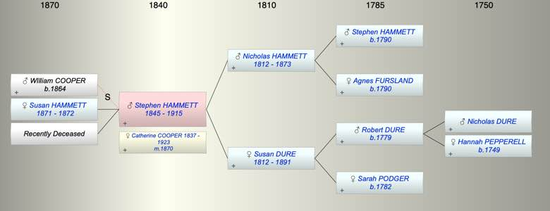

| [Index] |
| Stephen HAMMETT (1845 - 1915) |
|  |
| b. 16 Jun 1845 at Plympton St Mary |
| m. 1870 Catherine Julyan COOPER (1837 - 1923) at Plymouth |
| d. 29 Apr 1915 at Plymouth aged 69 |
| Near Relatives of Stephen HAMMETT (1845 - 1915) | ||||||
| Relationship | Person | Born | Birth Place | Died | Death Place | Age |
| Grandfather | Stephen HAMMETT | abt 1790 | ||||
| Grandmother | Agnes FURSLAND | abt 1790 | ||||
| Grandfather | Robert Pepperell DURE | 1779 | Stokenham, Devon | |||
| Grandmother | Sarah PODGER | 1782 | Langport, Somerset | |||
| Father | Nicholas John HAMMETT | 1812 | Plymouth | 1873 | Plympton St Mary | 61 |
| Mother | Susan DURE | abt 1812 | 1891 | Plympton St Mary | 79 | |
| Self | Stephen HAMMETT | 16 Jun 1845 | Plympton St Mary | 29 Apr 1915 | Plymouth | 69 |
| Wife | Catherine Julyan COOPER | 1837 | Falmouth | 05 May 1923 | Plymouth | 86 |
| Step Son | WIlliam JANE COOPER | 1864 | Falmouth | |||
| Daughter | Susan Annie HAMMETT | 1871 | Plymouth | 1872 | Plymouth | 1 |
| Daughter | Living or Recently Deceased | |||||
| Brother | Robert H HAMMETT | 1838 | Stokenham | |||
| Sister | Sarah Agnes HAMMETT | 1841 | Plymton | 1880 | 39 | |
| Aunt | Agnes HAMMETT | 1814 | Plymouth | 07 Jun 1866 | Plymouth | 52 |
| Uncle | Thomas WHITE | 1812 | 18 Jan 1857 | Plymouth | 45 | |
| Aunt | Elizabeth HAMMETT | 1817 | Plymouth | |||
| Uncle | Robert DURE | 1816 | Langport | 16 Jun 1866 | Coleridge, Devon | 50 |
| Aunt | Elizabeth HARLEY | |||||
| Uncle | William DURE | 1816 | ||||
| Cousin | Thomas WHITE | 1843 | Plymouth | |||
| Cousin | Agnes P WHITE | 1848 | Stoke Damerel, Plymouth | |||
| Cousin | Eliz DURE | 1841 | South Pool, Devon | |||
| Cousin | Mary Grace Hurley DURE | 1843 | Stokenham | |||
| Cousin | John Harley DURE | 1845 | Stokenham | |||
| Niece | Living or Recently Deceased | |||||
| Nephew | George Goodwin BREWER | 27 Jan 1886 | Teignmouth | 1894 | 8 | |
| Niece | Living or Recently Deceased | |||||
| Niece | Living or Recently Deceased | |||||
| Nephew | Stewart G BREWER | 05 Jul 1890 | Teignmouth | 1892 | 2 | |
| Sister in Law | Elizabeth Downing OLIVER | 1834 | Exeter | 1926 | Plymouth | 92 |
| Brother in Law | Charles BREWER | 1851 | Starcross | |||
| Events in Stephen HAMMETT (1845 - 1915)'s life | |||||
| Date | Age | Event | Place | Notes | Src |
| 16 Jun 1845 | Stephen HAMMETT was born | Plympton St Mary | Note 1 | ||
| 1870 | 25 | Married Catherine Julyan COOPER (aged 33) | Plymouth | ||
| 1871 | 26 | Birth of daughter Susan Annie HAMMETT | Plymouth | ||
| 1872 | 27 | Death of daughter Susan Annie HAMMETT (aged 1) | Plymouth | ||
| 1873 | 28 | Death of father Nicholas John HAMMETT (aged 61) | Plympton St Mary | Note 2 | |
| 1891 | 46 | Death of mother Susan DURE (aged 79) | Plympton St Mary | Note 3 | |
| 29 Apr 1915 | 69 | Stephen HAMMETT died | Plymouth | Note 4 | |
| Personal Notes: |
|
1861 census living Plymouth with his mother Susan Hammett 48 born Stokingham Devon, gardener’s wife; Sarah daughter 19 born Cornwood Devon ; Stpehen son 15 born Plympton
1881 census living Plymouth with his wife Catherine 41 born Falmouth and son William C 17 born Falmouth and dau Georgina 2 born Plymouth |
| Created on a Mac™ using iFamily for Mac™ on 15 Sep 2023 |